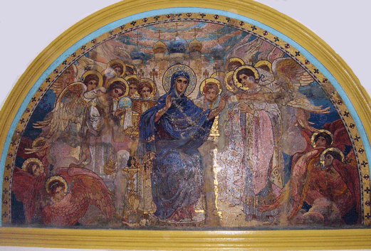
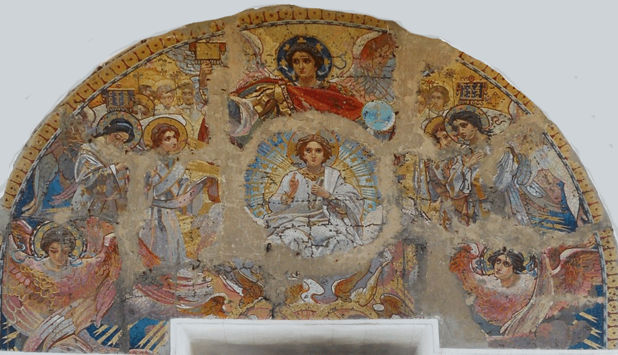
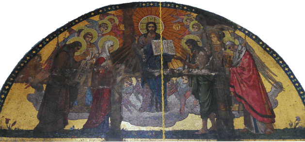
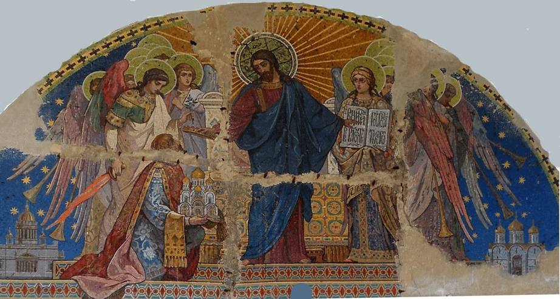
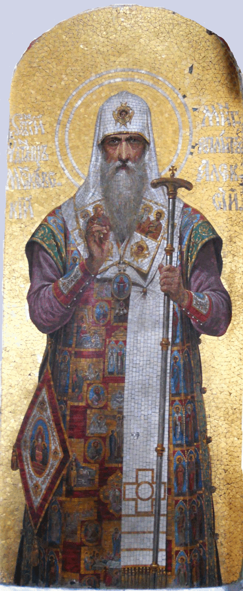
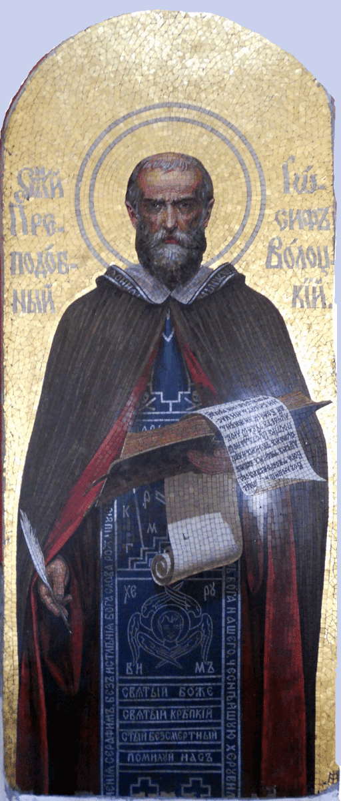
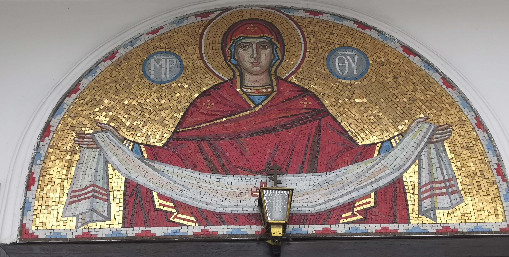
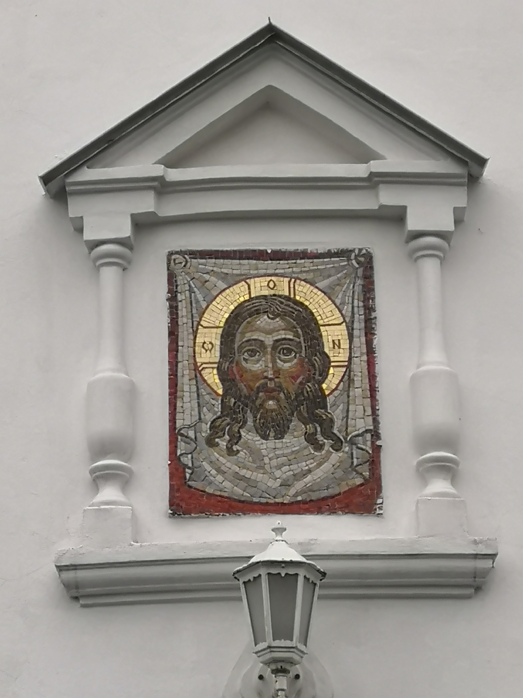

Мозаики храма
Мозаичная композиция "О Тебе радуется"
«Богоматерь с младенцем» – центральный фрагмент мозаичной композиции «О Тебе радуется, Благодатная, всякая тварь». Сохранность мозаичного фрагмента хорошая. Высота погрудного образа составляет около 2 м 40 см, а ширина – около 2 м 20 см. Практически всё остальное (около 1000м2) из первоначальной композиции погибло вместе с Варшавским храмом.
Незначительные кусочки смальты на нимбах выпали. Произошло это до или после закрепления мозаики определенно сказать об этом сейчас трудно. Над правым плечом Богоматери заметена небольшая часть смальты белого цвета.
Это, судя по сохранившейся графической копии эскиза и первоначальному рисунку, малый фрагмент ангельского одеяния. Слева и снизу под мозаикой видны линии цементного раствора. Мозаичный образ окружен фигурной рамкой в форме вытянутого полукруга. Рамка выполнена из цементного раствора и окрашена масляной краской желтого цвета. Расстояние между образом и рамкой заштукатурено и забелено известью.
Богоматерь прижимает к Себе Иисуса Христа. На Ее лике, в отличие от лика Спасителя, видна некоторая скорбь. Ее тревожит мысль о будущей судьбе младенца и мысль об оружии, которое пронзит Ей душу. Очень выразительно передан мозаичистом взгляд Богомладенца и Пречистой Девы. С какой бы точки не взирал на образ пришедший, взор Богородицы и Христа всегда устремлен на него.
По стилю исполнения образ Девы Марии и Младенца Христа живописный и без сомнения относится к Васнецовской школе письма. Это еще раз подтверждает, что эскиз мозаики принадлежит кисти В. М. Васнецова.

Сохранился ли эскиз или его части нам не известно. Однако, в Третьяковской галлерее храниться первоначальный рисунок композиции "О Тебе радуется", принадлежащий кисти Виктора Васнецова (Подпись в нижнем правом углу:"Виктор Васнецов"). Можно также рассмотреть в верхнем правом углу дату и место его создания: "Рябово 23 июля(или июня) 1906".
Рисунок выполнен акварельными и золотыми красками на картоне размером 70х50см, который разбит на 48 прямоугольников.
Сам экиз выполнялся в натуральный размер будущей мозаики и видимо состоял из 48 частей.
Глядя на этот рисунок можно только предполагать сколь великолепна выглядела в цвете мозаичная композиция "О Тебе радуется".
Все мозаки Варшавского собора были изготовлены Петербуржской мастерской Фроловых.
Мозаичная композиция "Господь Вседержитель на троне"

Данное мозаичное панно до начала нынешнего века считалось утраченным, т.к. не имелось информации о его местонахождении.
Эскиз для мозаики был написан Н. А. Бруни, предположительно, писал в период с 1900 по 1904гг.
Размер данного панно был больше, чем другие привезённые мозаичные композиции и по высоте, и по длине. Это и стало одной из причин, почему мозаика Н. А. Бруни не была установлена на стены строящегося Покровского собора. Она просто не помещалась ни на одну из стен. А после установки меньших по площади 5-ти мозаичных композиций над боковыми входами и в алтаре других вариантов, кроме как складировать её в подвале, не осталось. Вторая возможная причина, по которой мозаика «Господь Вседержитель на троне» не была установлена на стены даже частично, это сильная раздробленность на мелкие части и отсутствие важных фрагментов, что не позволяло образовать полную композицию пусть и с утратами.

По сохранившимся фотографиям и открыткам западного входа Варшавского собора и кусков мозаики, видно, что в центре мозаичной композиции изображён Христос в полный рост, сидящим на золотом троне в окружении шести ангелов. Ближняя пара ангелов изображена стоящими на коленях и держащими в руках Зерцало, кадило и раскрытую книгу с текстом: «Заповедь новую даю вам Да любите друг друга». Две пары ангелов на заднем плане изображены стоящими со склонёнными головами, держащими в руках хоругви с текстом на славянском языке: «Свят Свят Свят». Вся композиция имеет золотой фон.
Сейчас в Свято-Покровском храме в одном из помещений цокольного этажа оборудован музей храма. Там хранятся 11 больших кусков и сотни мелких фрагментов мозаичной композиции «Господь Вседержитель на троне».
Используя этот эскиз и старые фотографии , шаг за шагом на ПК составлялись кусочки мозаики. В результате чего была частично восполнена мозаичная композиция «Господь вседержитель на троне» на 60%.
Мозаичная композиция "Богоматерь с ангельскими чинами"

Изготовлена по эскизам Н.Бруни. Размер композиции составляет около 5 м 50 см в длину и около 2 м 80 см в высоту. Выполнена как и предыдущая мозаика в форме полукруга. При визуальном исследовании заметны широкие горизонтальные и вертикальные полосы более бледные по цветовой гамме, чем вся композиция. Недостающие фрагменты были восполнены местами фресковой живописью. Есть утраты кусочков смальты на мозаичных фрагментах. Композиция окружена фигурной рамкой в форме полукруга. Рамка выполнена из цементного раствора и окрашена масляной краской желтого цвета.
Богородица изображена сидящей на золотом престоле с предстоящими Ей архангелами Михаилом и Гавриилом, серафимами и прочими ангельскими силами. В руках архангел Михаил держит развернутый свиток. На свитке имеется надпись на церковно-славянском языке: «Пророк Исаия. Се Дева во чреве зачнет и родит Сына и наречет имя Ему Еммануил».
По стилю исполнения образы Богородицы и ангелов живописные.
Мозаичная композиция "Собор Архистратига Михаила"

Изготовлена по эскизам Н.Бруни. Наиболее поврежденная из всех установленных мозаик. Размер композиции составляет около 5 м 40 см в длину и около 2 м 70 см в высоту. Выполнена мозаика в форме полукруга. При визуальном исследовании бросаются в глаза множество широких горизонтальных и вертикальных полос. Недостающие фрагменты были заштукатурены цементным раствором. Есть много утрат и механических повреждений кусочков смальты на мозаичных фрагментах. В особенности на центральном фрагменте. На композиции видны около 30 скоб, фиксирующих фрагменты мозаики на стене собора. Композиция окружена фигурной рамкой в форме полукруга. Рамка выполнена из цементного раствора и окрашена фасадной краской белого цвета.
На мозаичной композиции Отрок Христос изображен с благословляющей десницей, сидящим на престоле. Ему предстоят вместе с архангелом Михаилом херувимы, шестокрылатые серафимы, престолы и прочие ангельские чины. В левом нижнем углу находится знак похожий на букву "М" и "Ф" – знак-подпись мастерской Фроловых.
По стилю исполнения образы Отрока Христа и ангелов живописные. Эта композиция из всех сохранившихся мозаик отличается наличием большого количества цветов и оттенков смальты.
Мозаичная композиция "Спаситель с предстоящими"

Размер композиции составляет около 5 м 41 см в длину и около 2 м 60 см в высоту и выполнена в форме полукруга. Недостающие фрагменты этой мозаики были восполнены фресковой живописью. Есть утраты кусочков смальты на мозаичных фрагментах. Композиция окружена фигурной рамкой в форме полукруга.
Иисус Христос изображен с благословляющей десницей стоящим на облаке в лике ангельских сил. На усеянном цветами зеленом покрове Ему предстоят Богородица и святой равноапостольный Кирилл. А слева – с приклоненными главами предстоят Креститель Спасов Иоанн и святой равноапостольный Мефодий. В левой руке Спаситель держит развернутую книгу, в которой написано на славянском языке: «МИР ВАМ». В правой руке у Крестителя находится сложенный свиток, а левая рука указывает на Христа. В руках у равноапостольного Кирилла имеется развернутый свиток. На этом свитке изображены первые три буквы придуманного им славянского алфавита: «А Б В».
По стилю исполнения образы Спасителя, Богородицы, ангелов и святых живописные.
На золотом фоне в левом нижнем углу видна надпись на русском языке, выложенная смальтой белого цвета: «Ф 1904 Пр. Н. Кош». Здесь указаны: знак мастерской Фроловых, год составления мозаики и автор ее эскиза, а именно профессор Н. А. Кошелев.
Мозаичная композиция "Спаситель с донатором"

. Размер композиции составляет около 5 м 20 см в длину и около 2 м 60 см в высоту. Выполнена мозаика в форме полукруга. Недостающие фрагменты были заштукатурены. Есть утраты небольшого количества кусочков смальты на мозаичных фрагментах. На композиции видны 25 скоб, фиксирующих фрагменты мозаики на стене собора. Композиция окружена фигурной рамкой в форме полукруга.
На композиции Господь изображен стоящим в лике ангельских сил. Сразу за Господом виден престол. Ближе всех к Христу предстоят архангелы– справа Михаил, а слева Гавриил. В левой руке архангел Михаил держит райскую ветвь, а в правой – огненный меч. В руках архангел Гавриила находится раскрытое Евангелие, на страницах которого на церковно-славянском языке написано: «Вниди в радость Господа твоего. Матф 22,24» . Слева у ног Спасителя на коленях стоит человек в княжеском одеянии. Он преподносит на рушнике в дар Иисусу Христу пятиглавый собор с золочеными куполами. Христос за это, указывая левой рукой на Евангельские слова, правой рукой возлагает на голову принесшего свой дар золотой венец. В левом и правом нижних углах композиции помещены макеты соответственно Петербургского Исаакиевского собора и Московского Успенского собора. Собор, представленный на мозаичной композиции, есть ничто иное, как макет Варшавского собора в честь святого благоверного князя Александра Невского. Собор на этой мозаике изображен с западной стороны. Над тремя центральными входами собора видны контуры мозаичных композиций. Человеком, приносящим его в дар, является никто иной, как Л. Н. Бенуа, автор проекта Варшавского собора. За то, что не закопал в землю, а приумножил от Господа вверенный ему талант, он будет приветствован Богом указанными на мозаике словами и увенчан от Него золотым венцом.
Наверняка символичным является помещение на этой мозаике Исаакиевского и Успенского соборов. По своему архитектурному стилю Варшавский собор подражает Успенскому, а внутри и снаружи многие иконографические композиции выполнены мозаикой, как в Исаакиевском соборе.
По стилю исполнения образы Спасителя, ангелов и приносящего дар - живописные.По кругу композиция украшена орнаментом, ширина которого приблизительно равна 15 см. Орнамент выполнен смальтой золотого, зеленого и красного цвета.
Мозаика "Святитель Алексий митрополит Московский"

Сохранность мозаики превосходная. Высота образа составляет 1 м 71 см, а ширина – 72 см. Верхний край мозаичного панно выполнен в виде полукруга. Изображение святителя почти в полный рост. При визуальном исследовании на святительском омофоре заметны сколы нескольких кусочков смальты.
Святой митрополит Алексий изображен в полном святительском облачении в куколе с благословляющей десницей, в другой руке он держит посох. На куколе кроме серафимов имеются образы святых апостолов. Саккос украшают образы святых мучеников, преподобных, а также сцены из Нового Завета. На палице помещен образ Богородицы с предстоящими преподобным Антонием и преподобным Феодосием Киево-Печерскими, а на панагии – «Покров Божьей Матери».
По стилю исполнения образ святителя Алексия живописный.
Мозаика "Преподобный Иосиф Волоцкий"

Сохранность мозаики превосходная. Высота образа составляет 1 м 71 см, а ширина – 73 см. Верхний край мозаичного панно выполнен в виде полукруга. Изображение преподобного, как и святителя Алексия, почти в полный рост. При визуальном исследовании заметны незначительные повреждения элементов мозаики. На развернутом свитке – скол кусочка смальты. Внизу, в первых рядах мозаики отсутствует небольшое количество кубиков смальты.
Преподобный Иосиф изображен занимающимся написанием своего труда «Просветитель». В правой руке он держит перо, а в левой книгу и свиток. На свитке имеется церковно-славянский текст, следующего содержания: «Возлюбиши Господа Бога твоего всем сердцем твоим, всем умом твоим и крепостию. Пусть да не отлучает тебя от любви Божией ни жизнь, ни смерть, ни настоящее, ни грядущее». Святой облачен в параман и мантию. В правом нижнем углу на золотом фоне имеется некоторый символ похожий на заглавную букву «Ф». Без сомнения это знак-подпись, который указывает на изготовителя мозаичной смальты или место ее изготовления, то есть на Фролова и его мастерскую.
По стилю исполнения образ преподобного Иосифа живописный.
Мозаика "Покров Богородицы"

Современная мозаика. Была изготовлена в Минском Свято-Елизаветенском монастыре в 2006 году и установлена снаружи над центральным входом в храм.
Мозаика "Нерукотворный образ"

Современная мозаика. Была изготовлена в 2001 году и установлена снаружи храма на ценральной апсиде.